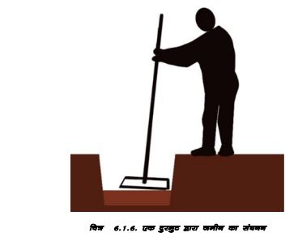
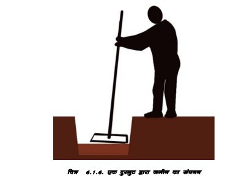

नींव की खुदाई

 

1. नींव की चौड़ाई को चिन्हित करने के लिए केंद्र रेखा
के दोनों किनारों पर खूंटियां लगाएं।
2. मिट्टी की गुणवत्ता की जांच करके, नींव की दीवार की
चौड़ाई के दोनों ऊर्ध्वाधर पक्षों को सुनिश्चित करें।
3. जमीन की सतह से ऊपरी मिट्टी और अन्य कचरा हटा
दें।
4. पानी की लेवल पाइप या स्पिरिट लेवल का उपयोग
करके नींव की सतह की समतलता और स्तर
सुनिश्चित करें।
भार वाहक संरचना
नींव में लगभग 12 सेमी मोटी 1:5:10 सीमेंट कंक्रीट बिछाएं और एक समतल सतह प्राप्त करने के लिए इसे अच्छी तरह से दुरमुट का उपयोग करें।
नींव की चिनाई के नीचे से प्रत्येक कोने में 12mm व्यास का 1सरिया खड़ा करें।
लगभग प्लिंथ स्तर तक सीमेंट मोर्टार में ईंटों या टूटे हुए पत्थर की चिनाई का उपयोग करके नींव का निर्माण करें।
नींव की चिनाई के चारों ओर की जगह को सावधानीपूर्वक मिट्टी की 100mm मोटी परतों से भर दिया जाता है।
यदि भराव की मिट्टी सूखी हो तो पानी का छिड़काव कर उसे गीला कर देना चाहिए।
प्रत्येक परत को दुरमट का उपयोग करके ठोस बनाया जाना चाहिए। सुनिश्चित करें कि यह नींव की चिनाई को नुकसान न पहुँचाए।
नींव के दोनों किनारों पर तब तक मिट्टी भरें और दबाएँ जब तक कि आवश्यक ऊंचाई तक न पहुँच जाए, जो आम तौर पर आसपास के जमीनी स्तर से थोड़ी अधिक होती है।
उपलब्ध अतिरिक्त मिट्टी को प्लिंथ में भरा जा सकता है।
नींव का निर्माण ठोस कठोर मिट्टी में पर्याप्त गहराई पर किया जाना चाहिए जो पूरे वर्ष नमी परिवर्तन से प्रभावित न हो।
नींव का निर्माण
दो मंजिला घर के लिए नींव कम से कम 600mm गहरी और 750mm चौड़ी होनी चाहिए। यदि मिट्टी ढीली है या पानी 2 दिनों से अधिक समय तक जमा रहता है तो हमें बड़ी और गहरी नींव रखनी पड़ सकती है। प्रभारी अधिकारी से सलाह लें।
यह रेखाचित्र नींव में पत्थर की चिनाई को दर्शाता है।
नींव खोदें और आधार को दुरमुट से दबाएँ।
नींव में 150mm मोटी बेस कंक्रीट (1:5:10) बिछाएं और एक समतल सतह पाने के लिए इसे अच्छी तरह से दुरमुट करें।
चित्र में दिखाए अनुसार बेस कंक्रीट और चिनाई से गुजरने वाली दीवारों के प्रत्येक कोने और टी-जंक्शन में 1:1.5:3 सीमेंट कंक्रीट में एक 12mm व्यास वाली ऊर्ध्वाधर सरिया प्रदान करें।
यदि आपको कोई बड़ी चट्टान/शिला मिट्टी में मजबूती से जमी हुई दिखती है जो नींव में उभरी हुई है, तो चट्टान को न हटाएं। चट्टान के शीर्ष और किनारों को रफ तरीके से काटें और उभरे हुए चट्टान वाले हिस्से को घेरते हुए सीमेंट मोर्टार से नींव की चिनाई का निर्माण करें। (दिया गया चित्र)
सीमेंट मोर्टार में नींव की चिनाई के पहले चरण से प्रत्येक कोने और दीवार जंक्शन पर एक 12mm व्यास वाली ऊर्ध्वाधर स्टील बार प्रदान करें। स्टील बार के चारों ओर खाली जगह को सीमेंट कंक्रीट (1:1.5:3) से भरें। यदि कंक्रीट ब्लॉक उपलब्ध हैं, तो हम नींव में सीमेंट मोर्टार (1:5) में कंक्रीट ब्लॉक का उपयोग कर सकते हैं।
दीवार की प्रत्येक 1200mm लंबाई पर ‘चिनाई की मोटाई के बराबर पत्थर‘ का उपयोग करें। बड़े पत्थर जो दीवार की चौड़ाई के बराबर होते हैं, आर पार पत्थर कहलाते हैं।
प्लिंथ लेवल तक, यानी जमीन से कम से कम 30 cm ऊपर तक चिनाई जारी रखें।
चरण 3: कोनों पर सरिया (ऊर्ध्वाधर) लगाना
सुनिश्चित करें कि प्रत्येक कोने पर ऊर्ध्वाधर सरिया उपलब्ध कराया गया हैं और प्लिंथ स्तर से कम से कम 1200mm ऊपर उभरे हुए हैं।
नींव और प्लिंथ में चिनाई जारी रखें।
सुनिश्चित करें कि चिनाई ष्चिनाई अनुभागष् के अंतर्गत विस्तृत विवरण के अनुसार की गई है।
चिनाई में चिनाई की प्रत्येक परत में लगभग 1.2 मीटर की दूरी पर आर-पार पत्थर लगाएं।
यदि लंबे पत्थर उपलब्ध नहीं हैं, तो चिनाई में लगभग 15cm (6श्) का अंतर छोड़ दें, अंतर को 1:1.5:3 सीमेंट कंक्रीट से आधा भरें, फिर दीवार की मोटाई के बराबर लंबाई की 10mm व्यास वाली स्टील की छड़ रखें। और कंक्रीट भरें. इस प्रकार हम चिनाई में एक अच्छा आर पार पत्थर बना सकते हैं।
प्लिंथ स्तर से 75mm नीचे तक चिनाई जारी रखें और फिर सभी दीवारों को प्लिंथ स्तर पर बांधने के लिए 75mm मोटी आरसीसी प्लिंथ बैंड प्रदान करें।
चरण 2: नींव का काम
सबसे पहले, जमीन को समतल करें और किसी भी झाड़ी या पत्थर आदि को हटा दें।
तैयार किये हुए नक्षे के अनुसार नींव की खाइयों को चिह्नित करें। दिए गए चित्र के अनुसार।
नींव की खाइयों का न्यूनतम आकार 75cm चौड़ा और 60cm गहरा होना चाहिए। यदि मिट्टी नरम है, तो प्रभारी अधिकारी से परामर्श करें और उनकी सलाह लें।
मिट्टी खोदें और खोदी गई मिट्टी को खाइयों से कम से कम 45 cm दूर रखें।
पानी छिड़कने के बाद ‘दुरमुटष् का उपयोग करके नींव की खाइयों को समतल करें।
पहले कंक्रीट की एक परत (1 सीमेंट: 5 रेत: 10 पत्थर बजरी 40mm आकार की) कम से कम 12cm मोटी प्रदान करें, यह उन स्थानों पर अधिक मोटी हो सकती है जो उतार-चढ़ाव वाले हैं।
आधार को समतल करने के लिए कभी भी खोदी गई मिट्टी को खाइयों में वापस न भरें।
चरण 3: नींव का निर्माण
्रत्येक कोनेध्टी-जंक्षन पर 1:15:3 सीमेंट कंक्रीट की 50mm मोटी परत बिछाए,ं और टाई कॉलम का सरिया रखें (चित्र देखें)
टाई कॉलम में 12mm व्यास के 4 सरिये और 8mm व्यास के रिंग लगभग 15 से 20cm की दूरी पर हैं।
सीमेंट कंक्रीट (सीमेंट 1: रेत 3: पत्थर टुकडे 6) में पत्थर की चिनाई के साथ खाइयों को जमीन के स्तर तक भरें, टाई कॉलम सरियों के चारों ओर खाली छोड़ दें।
जमीन के स्तर से ऊपर प्लिंथ स्तर तक सीमेंट कंक्रीट में 40cm मोटी पत्थर की चिनाई की दीवारें बनाएं।
चरण 4: नींव का निर्माण
पूरे जोन ए में हम 1:6 सीमेंट रेत मोर्टार, या 1:3:6 (1सीमेंट: 3 रेत 6 भाग 10mm छोटे आकार की बजरी जो स्थानीय स्त्रोतो से उपलब्ध है) में पत्थर की चिनाई में पत्थरों का उपयोग रेंगे।
सुनिश्चित करें कि रेत और बजरी मिट्टी/गंदगी से मुक्त हैं। कोनों और दीवार के जंक्शनों पर बने वर्ग आरसीसी टाई कॉलम के स्थान हैं जिनमें 12mm व्यास की 4 सरिया की खड़ी छड़ें हैं।
यह तस्वीर नींव और प्लिंथ में कोनफाइंड चिनाई प्रणाली में पत्थर की चिनाई को दर्शाती है।
चिनाई में लगभग 1.2 मीटर के अंतराल पर आर पार पत्थर लगाएं।
टाई कॉलम के सरिये की छड़ें हर कोने पर बाहार निकली हुई हैं।
आरसीसी प्लिंथ बीम बिछाने का समय आ गया है।
प्लिंथ लेवल पर आरसीसी बीम डाली जाती है। इसमें नीचे की ओर 12mm व्यास के 2 सरिये और शीर्ष पर 12mm व्यास के 2 सरिये हैं। रिंग 6 या 8mm व्यास की छड़ों के होते हैं।
चिनाई प्लिंथ बीम के ऊपर पारंपरिक रूप से धूप में सुखाई गई ईंटों का उपयोग करके 1:6 सीमेंट मोर्टार में की जाती है, तथा स्तंभों के लिए जगह छोड़ी जाती है। दोनों सिरों पर ईंट की टूथिंग लगाई गई है जो कॉलम के साथ जुड़कर एक जोड़ रहित संरचना बनाएगी।
यह ध्यान रखना महत्वपूर्ण है कि प्रत्येक ईंट परत की पहली ईंट और आखिरी ईंट मिट्टी की ईंट नहीं है बल्कि समान आकार की कंक्रीट ईंट है। यह सुनिश्चित करने के लिए किया जाता है कि जब कोनों पर चिनाई के अंतराल को सीमेंट कंक्रीट से भरा जा रहा हो तो मिट्टी की ईंटें सीमेंट कंक्रीट के पानी में न घुलें।
जब टाई कॉलम के बीच की चिनाई प्लिंथ से 80 cm ऊपर पहुंच जाती हैए तो दीवारों के सभी कोनों और टी जंक्शनों को दोनों तरफ शटरिंग प्रदान की जाती है और कंक्रीट को खाली स्थान में भर दिया जाता है जैसा कि चित्र में दिखाया गया है। इस प्रकार दीवारें टाई कॉलम में ठीक से चिपक जाती हैं और आरसीसी टाई कॉलम से अलग नहीं होती हैं।